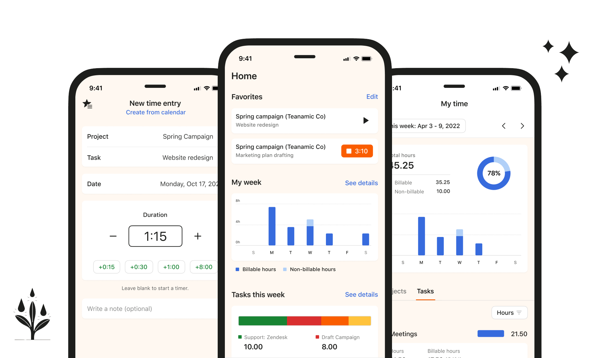
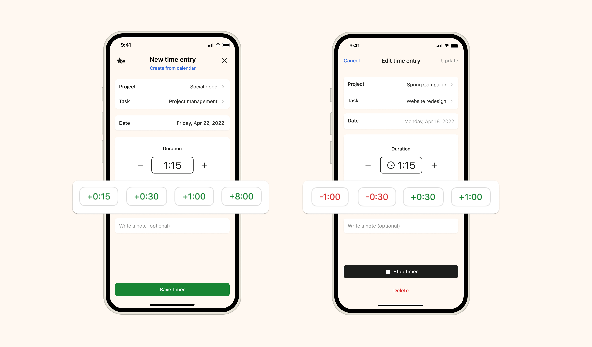
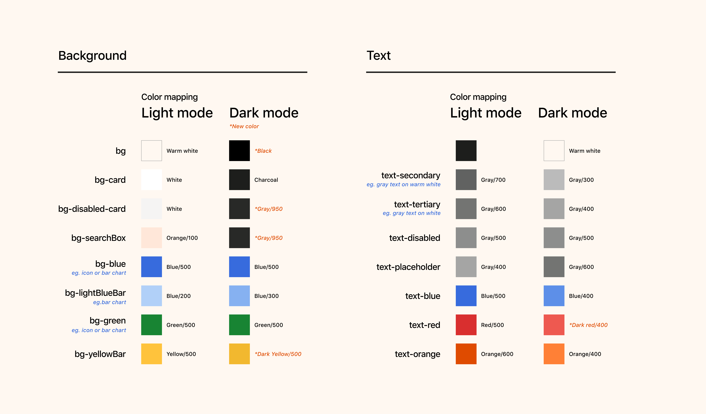
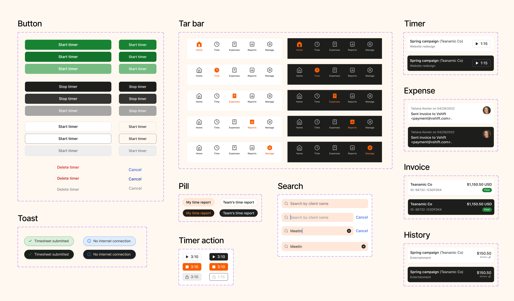

Harvest Mobile
50% daily feature adoption, app store ratings from 3.9 to 4.5
50% daily feature adoption, app store ratings from 3.9 to 4.5

Harvest is a time-tracking and invoicing SaaS tool used by 70K+ customers, and many rely on its mobile app to track time on the go. The mobile app had been neglected for years—outdated UI and missing features that competitors had long shipped. I led the product and design strategy to modernize it.
I led a multi-method research effort—competitive analysis, behavioral data review, surveys (89 responses), and interviews (7 users)—to understand the gap between how customers were using Harvest mobile and how they wanted to use it.
The research surfaced that regular mobile users valued the app for quick, interstitial moments—logging forgotten time after work, tracking while away from their desk. For them, speed and ease were everything.
The competitive analysis added urgency. Two of three direct competitors had higher app store ratings, with more modern UI and deeper native platform integration.
Usage data showed that most logged durations clustered around a few common intervals. Instead of requiring manual input every time, I explored surfacing frequent options as one-tap presets.
I tested several approaches. Slider and wheel interfaces seemed intuitive but added confusion in testing—users struggled to land on precise values. Preset buttons won: faster, less error-prone, immediately understandable. No competitor had implemented this pattern.

Quick time tracking preset buttons.
To unify mobile with web, I adapted Harvest's design system "Porchlight" for iOS and Android. The complication: Porchlight was built for light mode only, and several brand colors failed contrast checks on dark backgrounds. Since existing apps already support dark mode, we deemed supporting it part of our MVP.
I faced an early architectural decision—create a parallel dark mode token set, or modify Porchlight's core colors. A separate system would be faster to ship but create long-term maintenance burden and inevitable drift. Modifying Porchlight meant slower alignment across teams but a single source of truth.
I pushed for the latter. Through experimentation, I developed adjusted color values that passed accessibility requirements while staying on-brand. These changes were folded back into Porchlight, benefiting the entire Harvest product ecosystem.

Color system for light and dark modes.

Harvest mobile design system components.